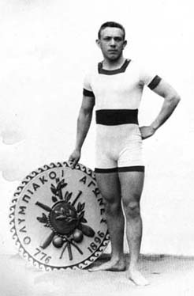
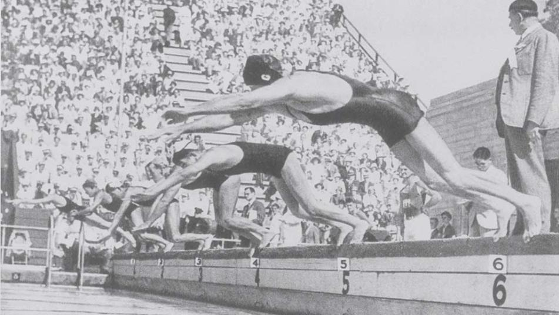

História do esporte
 Apesar de não ser um exercício tão natural para o ser humano como caminhar ou correr, a natação existe há milênios. Praticada na Grécia Antiga e pelos romanos, entre outros povos, a natação, embora popular, demorou muito para se transformar em uma competição organizada, tendo seus estilos se desenvolvido de diferentes formas ao longo da história.
Um dos primeiros registros data de 1696, quando o francês M. Thevenal descreveu uma maneira singular de nadar, semelhante ao nado de peito praticado atualmente, que consistia em movimentos de pernas e braços parecidos com os de uma rã. O nado de costas teve sua primeira forma criada em 1794, pelo italiano Bernardi. Ele sugeriu um movimento com os dois braços sendo jogados para trás simulaneamente, que, a partir de 1912, foi aperfeiçoado, tornando-se bem parecido com o nado de costas praticado atualmente.
Em 1873, o inglês John Trudgen desenvolveu uma nova técnica, que consistia em rotações laterais do corpo, tendo a movimentação dos dois braços sobre a água como principal fonte de deslocamento. Essa técnica, batizada de Trudgen ou “over-arm-stroke”, foi aperfeiçoada pelo australiano Richard Cavill e, posteriormente, transformou-se no nado crowl (livre) que conhecemos hoje.
Finalmente, na década de 1930, nadadores norte-americanos, já durante competições, atentaram para o fato de que as regras do nado de peito não impediam que o movimento dos braços fosse realizado sobre a superfície da água, o que permitia um deslocamento mais rápido. Essa manobra conviveu com a técnica do nado peito por quase 20 anos até que, em 1948, um nadador húngaro a transformou no nado borboleta, reconhecido oficialmente pela Federação Internacional em 1953 como um estilo da natação.
Os primeiros torneios remontam ao século 19, tendo ocorrido na Austrália, em 1858, no Campeonato Mundial de 440 jardas. Em 1869, a Inglaterra realizou o 1º Campeonato Nacional e, finalmente, em 1877, os Estados Unidos adotaram a forma de competições organizadas, inicialmente, pelo New York Athletic Club. Aos poucos, a modalidade ganhou força e, em 1908, durante as Olimpíadas de Londres, foi fundada a Federação Internacional de Natação (Fina), que comanda não só as provas da modalidade, mas as de nado sincronizado, polo aquático e saltos ornamentais.
No Brasil, o esporte surgiu, oficialmente, em 31 de julho de 1897, com a fundação da União de Regatas Fluminense. Um ano depois, o Clube de Natação e Regatas organizou o primeiro Campeonato Brasileiro, que consistia em uma distância de 1.500 metros, entre a Fortaleza de Villegaignon e a praia de Santa Luzia, no Rio de Janeiro.